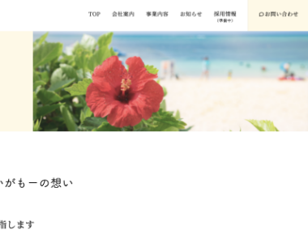
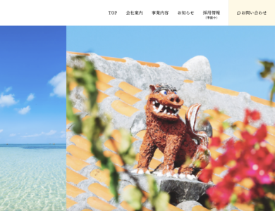

訪問介護サービス会社 コーポレートサイト
合同会社いがもー
Background
制作背景
- クライアント
- 沖縄県沖縄市に実在する地域密着型の訪問介護サービス会社
- ターゲット
- 訪問介護サービスの利用を検討している高齢者とその家族
- 目的・狙い
-
- コーポレートサイトを設けることで、信頼性のある企業として認知してもらう。
- サービス内容やお知らせを発信し、安心感をもって利用を検討してもらう。
- 要望
-
- 利用を検討しているお客様からの信頼性を高めたい。
- 集客につなげたい。
- 採用活動を強化したい。
Concept
コンセプト
- 与えたいイメージ
- 温かみ、安心感、親しみやすさ、信頼性
- フォント
- 筑紫A丸ゴシック Std・Noto Serif JP
- カラー
-
温かみのある印象をもたせるために、ベージュ系統のカラーを使用しました。
Point
ポイント
- ◾️信頼性と安心感を表現したデザイン
- 地域密着型のサービスを提供していることから、まずはユーザーに親近感を与えることで信頼性を感じられるデザインにしたいと考え、ファーストビューに沖縄の写真を取り入れた。また、サイト全体をベージュ系の温かみのあるカラーを使用し、丸みのフォントを使用することで安心感を表現した。
- ◾️シンプルな導線のサイト構成
- サービス内容や会社概要など、利用を検討する際に必要な情報を中心に構成。情報を詰めすぎず、ユーザーが迷わず目的の情報に辿り着けるよう、分かりやすい導線での設計を意識した。


Overview
概要
- 作業工程
- 企画／設計／ワイヤーフレーム作成／デザイン／コーディング
- 使用ツール・言語
-
- HTML、SCSS（コーディング）
- XD（ワイヤーフレーム作成、デザイン）
- Photoshop、Illustrator（画像加工、トリミング）
- 制作期間
-
- ■ 3週間
- 企画：1週間
- 設計、デザイン：1週間
- コーディング：1ヶ月